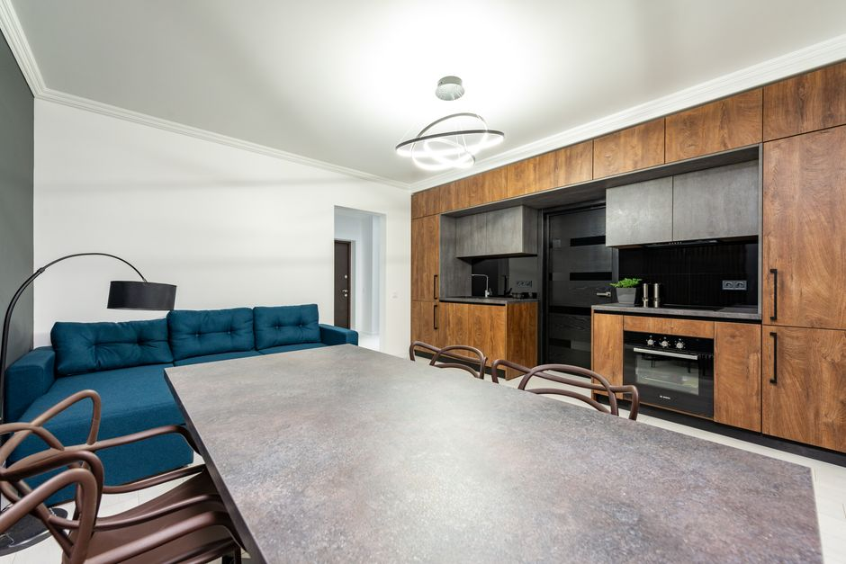

便利家電・最新家電
ロボット掃除機が向いている部屋と向かない部屋の特徴
2026-10-10

ロボット掃除機は便利な家電ですが、部屋の環境によって掃除のしやすさが大きく変わります。導入前にチェックしておきたい「向いている部屋」と「注意が必要な部屋」の特徴を、具体的なポイントに分けてご紹介します。
ロボット掃除機が向いている部屋の特徴
床に物が少なく、コード類が整理されている部屋では、ロボット掃除機はスムーズに移動でき、掃除効率が向上しやすいとされています。椅子の脚や小物が少なく見通しの良い床面であれば、センサーによる障害物検知もスムーズに働きやすく、一台でまとまった範囲を掃除しやすい環境といえます。リビングやダイニングのように床置きの物が少ないお部屋は、導入後のメリットを感じやすい傾向があります。
段差やラグが多い部屋で気をつけたいポイント
一般的なロボット掃除機が乗り越えられる段差は約2cmが目安で、プレミアムモデルでは最大4cmまで対応するものもあります。10cm以上の大きな段差は、落下防止センサーが検知して停止する仕組みです。ラグを敷いている部屋では、カーペットの厚みより5mm以上余裕のある段差対応の機種を選ぶのが基本とされており、厚さ1.5cmのラグなら2cm対応、厚さ3cmの毛足の長い絨毯なら4cm対応の機種が目安になります。また、黒いラグは落下防止センサーが段差と誤認し、途中で停止してしまうケースがある点にも注意が必要です。
コード類や障害物が多い部屋の注意点
充電ケーブルやLANケーブルなど細い紐状のコードが床に置かれている部屋は、ロボット掃除機がコードを巻き込んでしまう可能性がある環境とされています。床にコードを置かないことが基本的な対策で、コードカバーで床から浮かせる、ケーブルボックスでまとめる、結束バンドで束ねるといった方法が有効とされています。障害物が多い部屋では、何度も停止を繰り返すことになりやすく、事前に床面を整理しておくことで掃除の効率を上げやすくなります。
階段や玄関がある住まいでのリスク管理
階段は玄関と並んで、ロボット掃除機の落下リスクが最も高い場所とされています。特に2階建ての住宅では、階段の最上段に物理的なバリケードや、アプリ上での進入禁止エリア設定を行うことが勧められています。物理バリケードを設置する場合は、階段の最上段から30〜50cm手前に設置するのが目安とされており、玄関の上がり框など段差のある場所も同様に事前の対策を検討しておくと安心です。
導入前にチェックしておきたい段差の採寸
ロボット掃除機を導入する前には、家具下や段差の高さをメジューで採寸しておくことが勧められています。ベッドやソファ下の隙間の高さ、玄関の上がり框、和室の敷居、厚手のラグの端など、段差になりそうな場所をあらかじめ測っておくことで、機種選びの際に対応できる段差の範囲と自宅の環境が合っているかを確認しやすくなります。
ロボット掃除機は床面がシンプルな部屋ほど力を発揮しやすい一方、段差やラグ、コード類、階段のある住まいでは事前の環境づくりや機種選びが大切になります。導入前に自宅の段差を採寸し、対策をしておくことをおすすめします。
読み込み中...